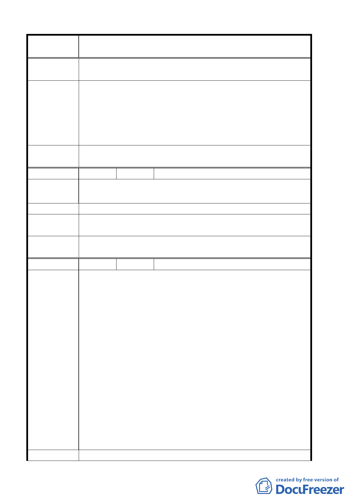

案 名 臺北市北投區都市計畫通盤檢討案（主要計畫）案
建議辦法
現有道路應於都市計畫道路開闢完成後逕行廢止，以符都市計
畫之規劃意旨，並免影響本校校地之規劃開發及浪費公產資源。
一、依都市發展局 92 年 7 月 31 日北市都二字第 09231943600
函，同意配合修正。
專 案小組 審 二、93.6.10 專案小組第五次審查會議：有關既成道路廢止問
查結論
題由於非屬都市計畫問題，請另依市府規定之法定程序辦
理。另有關學校建議新設人行步道連通學校部份，請學
校、發展局與地主另行協調辦理。
委員會議
決議
同意依專案小組審查結論辦理。
編 號 １４ 陳情人 張國田
陳 情 理 由 一、土地標示：振興三小段 1027 地號
建議理由：因在捷運站旁邊 200 公尺，所以敬請變更為商業區。
建 議 辦 法 敬請變更為商業區。
專案小組審
查結論
94.3.3 專案小組第 11 次審查會議：建議維持原都市計畫案。
委員會議
決議
同意依專案小組審查結論辦理。
編 號 １５ 陳情人 財團法人福祿文教基金會
建議位置：台北市北投區新民段四小段十二、十二之一、十三、
十四地號土地＜本古蹟定著土地及附屬庭園＞
建議理由：
一、本古蹟週邊主要出入口、鄰界坡崁部分之土地為：台北市
北投區新民段四小段三地號土地部份、五地號土地部份、
五─一地號土地部份、九號地號土地部份、十一號地號土
地部份、二十號地號土地部份、二十-一地號土地全部、二
陳情理由
十-二地號土地全部、二十-三地號土地部份，劃入古蹟保
存區。
二、前述地號土地之都市計畫使用份區皆為「特定休閒旅館住
宅專用區」。
三、今聞 台北市政府都市發展局刻正進行北投區都市計畫通
盤檢討作業，基於關心地區發展計畫、古蹟特殊性考量，
並定期維護本古蹟完整性，以及都市計畫使用分區符合現
況等理由，特提此意見，供 貴委員會參酌。
建 議 辦 法 劃為古蹟保存區。
第 13 頁，共 49 頁